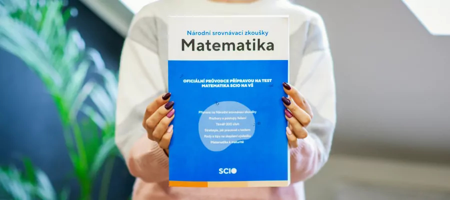

Чем SCIO отличается от CERMAT
Тесты SCIO проверяют не только то, что ты умеешь считать, но прежде всего то, как быстро и точно ты умеешь рассуждать. Вместо долгих вычислений тебя ждёт множество коротких заданий на время, где решает логика, а не зубрёжка формул.
Тесты общих учебных предпосылок (OSP) используют многие гимназии и средние школы, а Национальные сравнительные экзамены (NSZ) принимают вместо собственных вступительных экзаменов десятки вузов — в основном экономические, юридические и социальные направления. Покажу тебе, как справиться с обоими типами тестов и как эффективно распределить время.
Три области, на которых сосредоточимся
OSP и NSZ строятся на трёх типах мышления. Разберём все три, с упором на количественную часть, где больше всего задействована математика.
-
Вербальное мышление Работа с текстом, аргументацией и логическими связями между словами и понятиями.
-
Аналитическое мышление Выявление закономерностей в данных, упорядочивание информации и логические умозаключения.
-
Количественное мышление Числа, графики и базовые математические операции в практических заданиях — здесь помогу тебе больше всего.
К какому тесту SCIO ты готовишься?
OSP для средних школ
Общие учебные предпосылки для поступления в многолетние гимназии, средние и высшие школы. Помогаю только с аналитической частью теста.
Записаться на подготовку
NSZ для вузов
Национальные сравнительные экзамены, принимаемые вместо собственных вступительных на десятках направлений вузов.
Записаться на подготовкуЧастые вопросы
Есть ли разница между подготовкой к OSP и NSZ?
Да, OSP используется в основном для гимназий и средних школ, NSZ заменяет вступительные экзамены во многих вузах. Сфокусируемся на том тесте, который сдаёшь именно ты.
Вы помогаете с вербальной и аналитической частью, или только с математикой?
Специализируюсь в основном на количественной части, но разберём и стратегию для остальных частей теста.
Как начисляются баллы за неверный ответ?
Объясню тебе точную систему начисления баллов в тестах SCIO, чтобы ты знал(а), когда стоит угадывать, а когда нет.
Где проходят занятия?
Очно в Праге или онлайн — как тебе удобнее.
Интересует подготовка к тестам SCIO?
Напиши мне пару данных, и договоримся о вводной консультации по тестам SCIO.